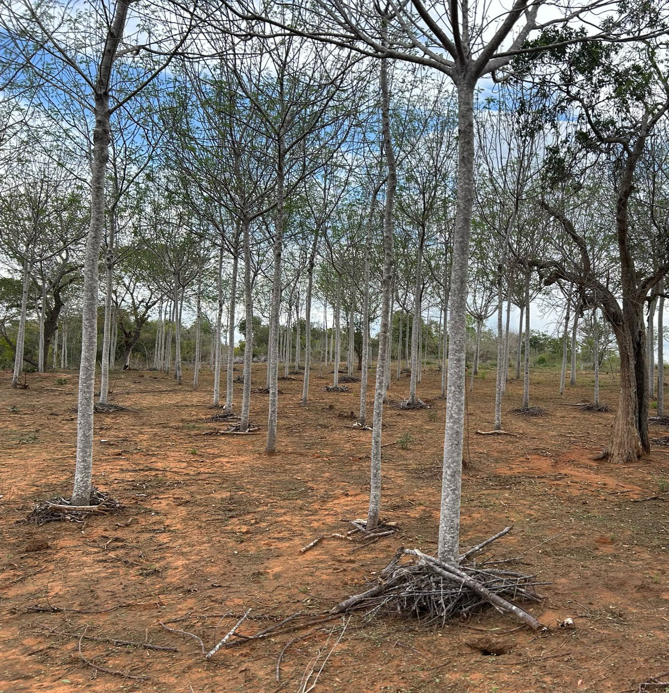

Why Most Tree Planting Projects Fail Before Planting Even Starts
Many projects are already off-track before the first tree is planted. We explore the hidden challenges in propagation, planning, and operational execution.
Read ArticleThoughts from the field, lessons from our work, and perspectives on building scalable restoration systems for a more resilient future.

Climate agencies are increasingly confident that El Niño conditions are likely to develop in 2026. For Kenya’s tree-planting sector, this could create a significant planting window, but only for organisations that prepare in advance.
Read Full ArticleMany projects are already off-track before the first tree is planted. We explore the hidden challenges in propagation, planning, and operational execution.
Read Article
A comparison of nursery models, their trade-offs, and how hybrid systems can improve both quality and community participation.
Read Article